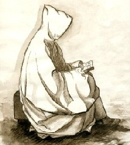

Forums galactiques > Assemblée Galactique : diplomatie officielle > Système de protection
Cette idée est complètement stupide! | 13 | |
Exelente idée! | 9 | |
C'est envisageable | 19 | |
Oui | 0 | |
Non | 12 | |
Total : 53 vote(s) | ||
Pages : 1
| qui-gon jinnAA Respect diplomatique : 224  06/06 ETU 15:11 | Score : 10 Détails Le commandant Jinn s'avança vers le pupitre.En voyant son visage, on pouvaitdeviner que ce qu'il avait à dire était sérieux.
Mes chers commandants, Je voudrai vous faire partager une idée qui a déjà été mise en place lors de la béta 2.Immaginons, je dis bien immaginons, qu'une guerre éclate.beaucoup de commandants innocents, nouveau, donc complètement étrangés à cette probable guerre, périraient sous les bombardements ioniques et hyperatomiques. Ils n'auraient plus rien.Mettez-vous à leur place.Ces commandants auraient besoin d'un système où se rétablir, un système de remise en forme! Ce système serait alors sous la protection de commandants bénévoles et relativements puissants.Ce que j'entends par "puissant" c'est bien sûr des technologies assez avancées et un grand nombre de troupes. Ou sinon Des guildéens pourraient être payés pour fournir des vaisseaux.Nous pourrions combiner les deux idées et la galaxie compterait moins de commandants morts ou disparus. Qui-gon jinn se réinstalla à sa place habituelle, assez content de son dscours | ||
| Inquisiteur Respect diplomatique : 44  06/06 ETU 15:20 | Score : 6 Détails Quelle paradoxe !
Pourquoi proteger les nouveaux des bombardements ? Pourquoi ne pas plutot empecher les anciens de bombarder ? Je sais pourquoi ! Vous voulez tous preservez votre "moralité", vous etes tous des chevaliers aux grands coeur ! Mais cependant vous n'acceptez pas d'arrretez de bombarder ? Vous aimez interieurement la mort, le sang et la destruction mais cela serait trop mal venus ! Acceptez que la haine et la puissance soient les moteurs de la vie et peut etre vous comprendrez les aboutissants de l'Inquisition ! | ||
| Revan82 Respect diplomatique : 545  06/06 ETU 15:24  | Score : 4 Détails Commandant,
vous dites de nouveaux commandants, mais nouveaux à quel point? Car si ils sont vraiment nouveaux et qu'une guerre éclate, leur système n'aura rien à craindre puisqu'il sera fermé. Donc si vous parlez de jeunes commandants qui viennent d'ouvrir leur système, là je suis d'accord, et les inciteraient même à ne pas le faire avant d'être en mesure de faire face à d'éventuels dangers. | ||
| arkos Respect diplomatique : 34  06/06 ETU 15:29 | Score : 3 Détails "Arkos entendi une belle parole dans l'assemblée et se mit a courir vers le pupitre "
Quelle lumineuse idée commandant nous l'avons vu dans l'histoire que les premieres victimes des conflits sont...les innocents . Dons de ce faite je soutien entierement mon collégue ,et j'invite tout les commandants responsable a faire parareil . "Arkos repartit en courant l'air affolé" | ||
| qui-gon jinnAA Respect diplomatique : 224 06/06 ETU 15:44 | Score : 1 Détails Oui effectivement je parlais des commandants venant d'ouvrir leur système Revan.
Et merci arkos de nous avoir donné votre oppignon...Je suis heureux que nous soyons du même avis. | ||
| hitman Respect diplomatique : 76  06/06 ETU 16:01 | Score : 3 Détails Le problème est le suivant:
Mon système vient d'être ouvert à mes dépends, et déjà 12 commandants sont recensés dans le point 1. Il faudrait mettre les 12 d'accord sur l'obtention des planètes. Bonne chance dans ce cas. | ||
| Hannibal Respect diplomatique : 89  06/06 ETU 16:10 | Score : 1 Détails Il est très difficile cher ami de limiter l'arriver des commandants dans un système vraichement ouvert.
Pour tout ces commandants assoiffés de pouvoir un système qui vient de s'ouvrir est une proie facile. Le seul moyen, quoi qu'il me paraisse purement utopique, est de les supplier de vous épargner. | ||
| arkos Respect diplomatique : 34 06/06 ETU 16:22 | Score : 1 Détails "Arkos revient précipitament affolé et en sueur"
Mais pourquoi ne pas crée une "police" ou une "milice" qui serait en charge de protéger les faibles contre les vils commandants sans honneur ni courage? | ||
| Revan82 Respect diplomatique : 545 06/06 ETU 16:28 | Score : 1 Détails Commandant Arkos,
une police ne serait pas la meilleure solution, car elle donne l'impression d'un manque de liberté. Ce qu'il faut, ce sont des commandants qui se proposent de proteger bénévolement les commandants qui ne peuvent le faire eux-même face aux commandants qui préfèrent s'attaquer aux faibles pour montrer leur "force". Donc il faut simplement apprendre à s'entre-aider les uns les autres. Merci de m'avoir écouté!!! __________________________ Revan, commerçant de la guilde!!! | ||
| arkos Respect diplomatique : 34 06/06 ETU 16:49 | Score : 2 Détails Cher Commandants Revan82
Pourquoi ne pas crée une charte de bonne conduite fais par nous tous et a faire signer par plus grands nombres de commandants et crée de façon annexe à cette charte un groupe de personne bénévole qui croient en cette charte et veille a ce quelle sois respecté . Je pense sincèrement que c’est possible et cela ne privera aucun commandants de liberté. Cordialement « Arkos repartit dans tous les sens ne sachant pas ou donné de la tête » | ||
| Revan82 Respect diplomatique : 545 06/06 ETU 17:05 | Score : 1 Détails Là je suis plus de votre avis Arkos, mais cela soulève un autre problème.
Qui écrira la charte, et je pense qu'elle pourra être mise en vote, mais tout le monde ne vient pas à l'assemblée. Et je ne vois pas qui pourrait envoyer cette charte à tous les commandants par réseau MP! Mais c'est à étudier! _________________________ Revan, commerçant de la guilde!!! | ||
| qui-gon jinnAA Respect diplomatique : 224 06/06 ETU 17:05 | Score : 2 Détails Commandant Arkos,
Créer une police ou une milice ne serait pas une bonne idée par-ce que vous savez comme moi qu'un déplacement exstrasystèmique prennent du temps et donc si nous créeons une police pour faire respecter la charte (que certains ne respecterons sûrement pas!) elle mettra un temps fou pour "punir" les malfaiteurs... bien à vous,qui-gon jinn. | ||
| arkos Respect diplomatique : 34 06/06 ETU 17:28 | Score : 2 Détails Chers commandants,
La charte pourrais etre écrit et débatu par nous tous au sénat et envoyé par Mp aux commandants libbre a eux d'accepter et de refuser, si elle obtient +60% des suffrages on pourras dire qu'elle est validé. Je me doute qu'elle sera forcéments violé par certain mais ce sera deja une base sur lequelle on pourras s'appuyer.Mais vous avez raisons cette idée et a travailler la précipitations serait une grave erreure Cordialement | ||
| Arkoris Respect diplomatique : 123  06/06 ETU 17:55 | Score : 5 Détails Arkoris entra à l'Assemblée Galactique. Il avait entendu ce qui avait été dit sur le projet du certain qui-jo-quin, il avait réfléchi sur la question et en avait fait une conclusion.
Il faut tout de même soulever un problème, le système de remise en forme sera obligatoirement ouvert et je pense qu'avec un peu de tactique, on peut le détecter facilement. Même si vous bunkérisez les planètes de vos protégés, vous ne pouvez pas faire avancer leur science donc le niveau de défense sera tout de même faible. Et ces systèmes facilement trouvés seront faciles d'accès aux personnes souhaitant prendre ces planètes facilement. Cela ferait en effet des belles proies. Et même si des personnes puissantes sont dans le système de remise en force, un bon nombre de fédérés pourront facilement se défendre. D'autant plus que beaucoup de jeunes commandants ne sé déclarent pas avec le non-expérience sur l'AG. Ils meurent donc inconnus. Non, je pense que si des jeunes commandants ont des problèmes, il faut les héberger dans un de nos système que l'on a entièrement, si l'on a bon coeur, afin qu'il se dévellope et là, vous pourrez donner des planètes hors du système. Vous dites que les jeunes commandants meurent dans les bombardements, votre système de remise en forme ne changera en rien les bombardements. Arkoris quitta l'Assemblée en observant d'un air pacifiste le commandant qui-jo-quin. | ||
| qui-gon jinnAA Respect diplomatique : 224 06/06 ETU 18:00 | Score : 1 Détails Vous avez peut-être raison commandant.mais en tout cas je pense qu'il faut garder l'idée de la charte.
Au fait, mon nom est qui-gon jinn et non pas qui-jo quin. |
Pages : 1
Forums galactiques > Assemblée Galactique : diplomatie officielle > Système de protection